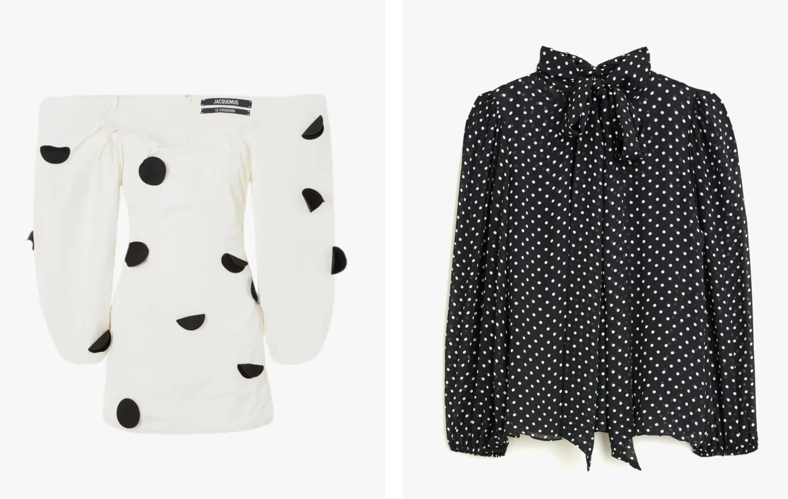
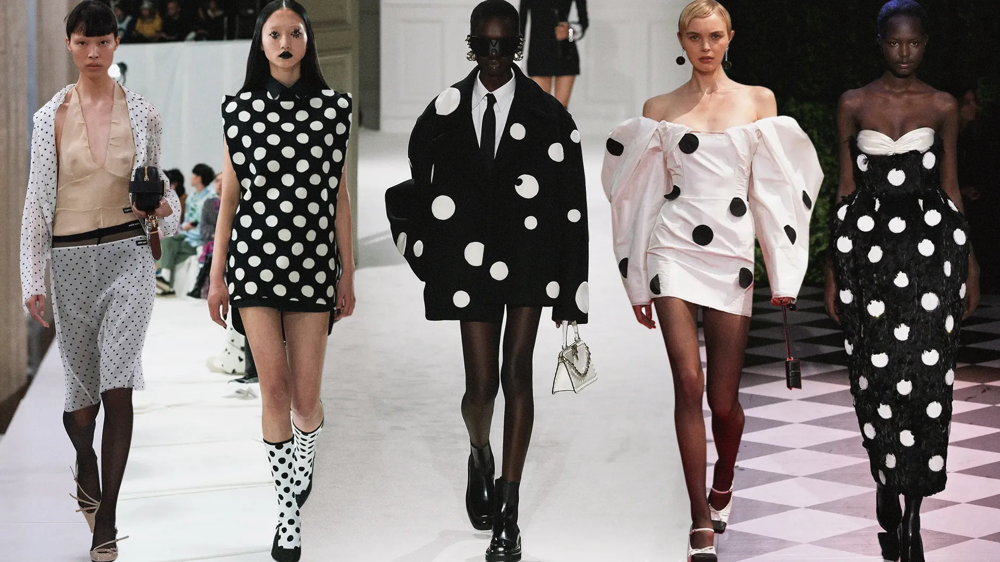

2023 has been filled with unique fashion styles. Explore the fun styles that have been popular throughout 2023
Fall Red
Maroon and deep red colors are the new "it" color for fall. Along with browns, and navy, maroon is a beautiful color that can be used as a statement piece or small pop of color. Maroon manicures, shoes, bags, and coats have been super trendy and cute.

Tied with a Bow
The trendy new girly style is tying bows on everything. From using ribbon to tie shoes, bows in hair, and printed bows on tops, it is apparent that pink bows are the girly new style


Polka Dotted
Polka dots are a cute pattern that are coming back in style. Polka dot outfits are playful and fun, and can be worn on anything.


2023 has been filled with cute, unique, fun prints and styles. Other popular trends include neutrals, navy,
Click these links below to purchase these trendy items!